00 // Introduzione allo Stack TCP/IP
PrefazioneLe moderne infrastrutture di telecomunicazione costituiscono la spina dorsale operativa di qualsiasi realtà aziendale. La comprensione profonda delle dinamiche di rete è un requisito fondamentale per la progettazione architetturale e per il troubleshooting.
Questo report modella un'architettura Enterprise seguendo meticolosamente i 4 Layer dello Stack TCP/IP. L'obiettivo è tracciare il percorso dei dati in modo granulare, partendo dai substrati puramente elettrici (L1), dotandoli di intelligenza (L2/L3), e recapitando il servizio finale (L4).

01.A // L'Ingresso ISP e il Demarcation Point
External ConnectivityInvertendo la prospettiva convenzionale, il flusso fisico dei dati aziendali ha origine dall'esterno. Il Livello 1 inizia nel punto esatto in cui l'infrastruttura pubblica dell'ISP (Internet Service Provider) penetra nell'edificio aziendale.
- Demarcation Point (DMARC): Il confine legale e fisico tra la responsabilità dell'operatore telefonico e quella dell'azienda. Qui terminano le linee stradali.
- Cavo in Fibra Monomodale (Single-Mode): A differenza delle reti interne (che usano fibra multimodale), l'ISP porta dorsali in fibra monomodale capaci di percorrere decine di chilometri senza attenuazione, grazie a un nucleo vetroso estremamente fine che guida un singolo raggio di luce.
- CPE / Modem Ottico (ONT): Apparato che converte il segnale ottico grezzo proveniente dalla rete pubblica in un formato elettrico o ottico standard, pronto per essere iniettato nel firewall perimetrale aziendale.
01.B // Zona 1: Il Datacenter (Core / MDF)
MDF & Data FabricAcquisita la connettività dall'ISP, la rete penetra nel cuore dell'azienda: il MDF (Main Distribution Frame) situato nella Zona 1. Questo è il forziere fisico ad altissima densità (Datacenter).
Il Cuore Fisico
L'ambiente è climatizzato e densamente cablato. Per connettere i potentissimi server adiacenti (nello stesso rack) si usano tozzi cavi passivi Twinax DAC (Direct Attach Copper) per latenze quasi nulle (sub-microsecondo), mentre tra fila e fila (End-of-Row) si usano cavi in fibra ottica multi-core (MPO) per scambiare terabit di dati sulla Storage Area Network (SAN).
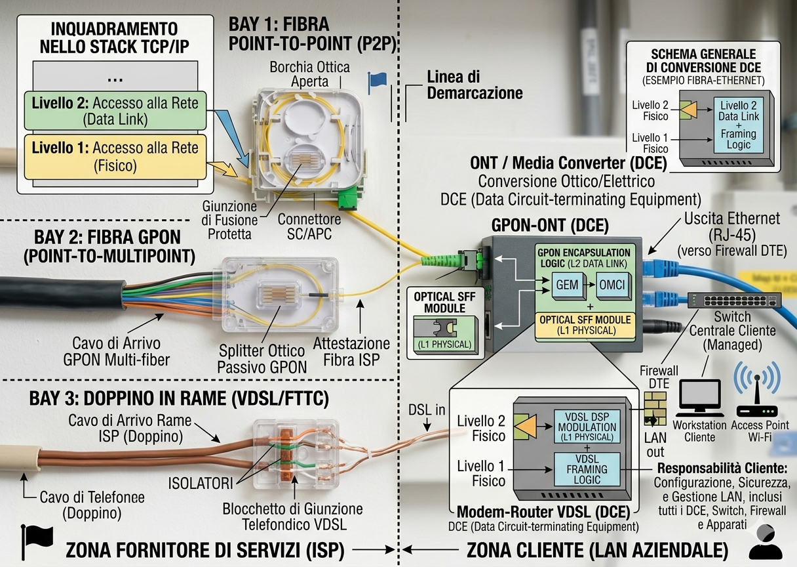
01.C // Zona 2 (Dorsale): Distribuzione in Fibra
Backbone AggregationDal Datacenter (Z1), i dati devono essere spinti verso i vari piani dell'edificio aziendale (Zona 2: Spina Dorsale Core). Per risalire i cavedi verticali si abbraccia la Fibra Ottica, per azzerare l'interferenza elettromagnetica (EMI) dei generatori di ascensori e spingere la banda a decine di Gigabit/s.
- Moduli SFP (Conversione O/E): Gli switch Core hanno porte modulari vuote. Inserendo un Transceiver SFP (es. 10GBASE-SR), i bit elettrici vengono convertiti al volo in un raggio Laser.
- Aggregazione Fisica (LACP): Non possiamo dipendere da un singolo filo di vetro (Single Point of Failure). Si stendono 2 o più fibre su percorsi (cavedi) divergenti. Il software le fonde in un EtherChannel. Se un tecnico trancia il cavo A (Fault L1), i laser continuano a viaggiare sulla fibra B senza disservizi per l'utente.
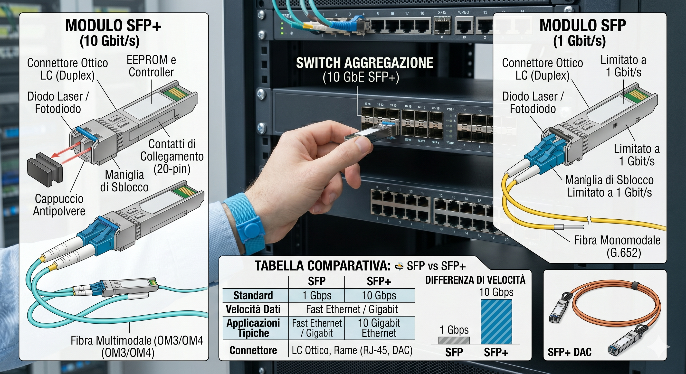
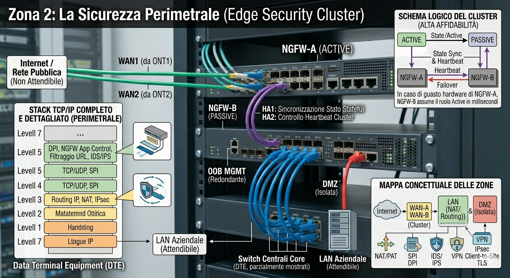
core-sw01(config)# interface range TenGigabitEthernet1/0/1 - 2
core-sw01(config-if-range)# description DOWNLINK-TO-IDF-PIANO-3
core-sw01(config-if-range)# channel-protocol lacp
core-sw01(config-if-range)# channel-group 10 mode active
core-sw01(config)# interface port-channel 10
core-sw01(config-if)# description BUNDLE-20G-LOGICO01.D // Zona 3: L'Armadio IDF e il Patching
Hardware TerminationsLa fibra dorsale giunge al locale tecnico di piano, terminando all'interno di un Armadio Rack (IDF). Qui, lo switch locale riconverte il laser in corrente elettrica, pronta per la distribuzione orizzontale finale in Rame verso le scrivanie.
Sicurezza Fisica (Patch Panel): I cavi rigidi provenienti dai muri (e diretti alle scrivanie) vengono punzonati sul retro di un Patch Panel (un blocco metallico passivo che funge da presa).
Il Patch Cord: Per collegare il Patch Panel alle porte RJ45 dello Switch, si usano bretelle morbide. L'ingegneria insegna che se un utente dovesse tirare brutalmente il cavo dalla parete, si strapperà la bretella da 3€ in armadio e non la costosa porta hardware dello switch (ASIC).
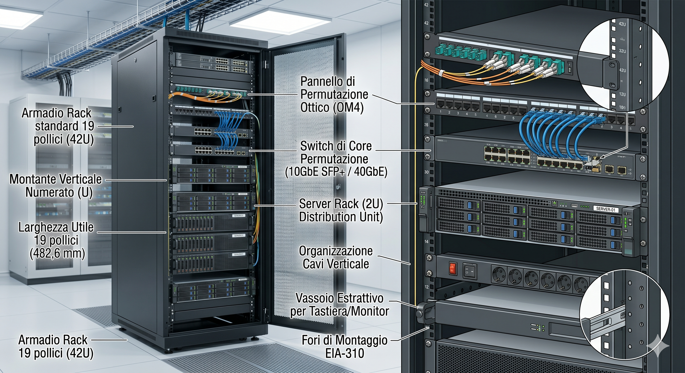
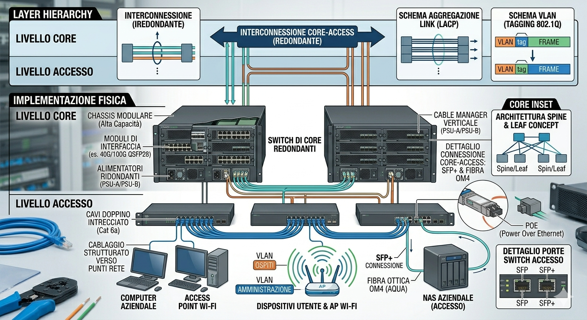
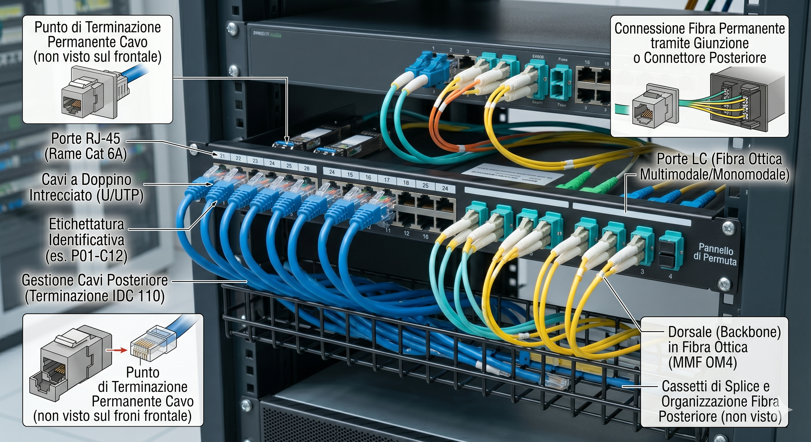
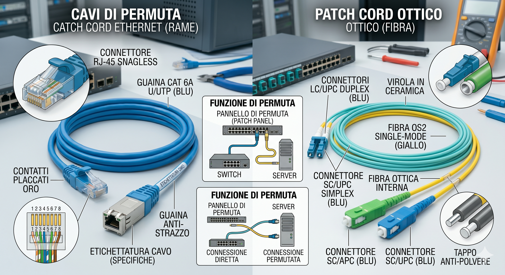
01.F // Zona 3 (Accesso): L'Ultimo Miglio (Rame)
Endpoint ConnectivityLasciato l'IDF (in un ambiente corporate standard), la rete affronta l'ultima tratta orizzontale (Zona 3: Distribuzione Periferica) per giungere alla postazione finale.
- Cablaggio Orizzontale (UTP): Il classico cavo in rame (Cat.6) corre fisso nei controsoffitti o sotto i pavimenti flottanti. Le coppie di fili interni sono twistate (intrecciate) per annullare reciprocamente le emissioni elettromagnetiche generate (Crosstalk).
- Presa a Muro (Keystone): Il cavo termina nella placchetta a parete vicino alla scrivania.
- La Scheda di Rete (NIC): Tramite l'ultima bretella, la tensione elettrica raggiunge il PC. La NIC decodifica le tensioni (+5V e -5V) ritrasformandole in un flusso binario software.
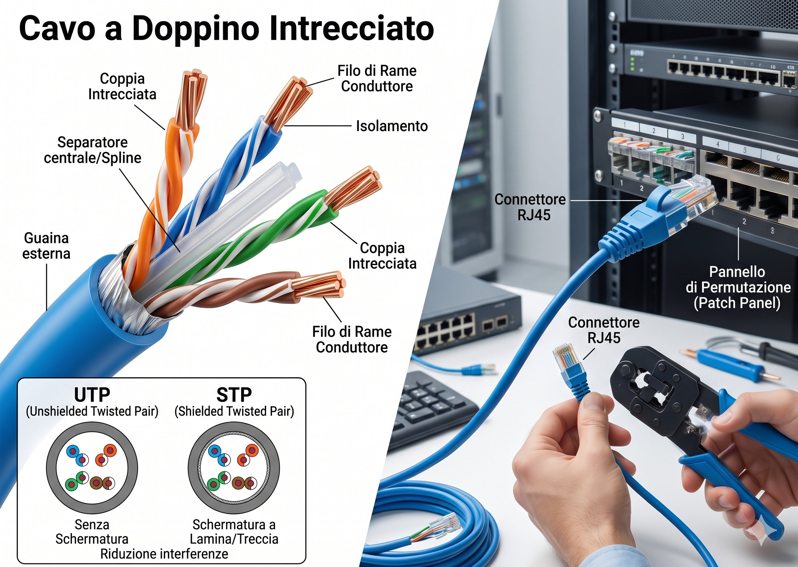
01.G // Step-by-Step: Il Flusso Fisico L1
Data Walkthrough L1Tracciamento Fisico: "Il Viaggio del Segnale"
La Consegna del Segnale (Dall'ISP al PC)
- Passo 1 (Ingresso Esterno): L'ISP inietta impulsi laser attraverso chilometri di Fibra Monomodale interrata, fino al Demarcation Point dell'edificio aziendale.
- Passo 2 (Nucleo Core - Z1): Il segnale approda nel Datacenter (MDF). Transita passivamente ad altissima velocità tra Firewall e Switch Core, per essere deviato sulle dorsali di distribuzione dell'edificio.
- Passo 3 (Viaggio in Dorsale - Z2): I moduli SFP dello Switch Core iniettano nuovamente fotoni nella Fibra Multimodale. Il raggio di luce risale verticalmente i cavedi del grattacielo per distribuire la banda al piano corretto (LACP assicura continuità in caso di taglio fisico).
- Passo 4 (Decodifica Elettrica - Z3): La luce sbatte sul fotodiodo (RX) del modulo ottico situato nello Switch (nell'Armadio IDF di quel piano). Il laser viene riconvertito in impulsi elettrici (+5V).
- Passo 5 (L'Ultimo Miglio - Z3): La corrente attraversa la bretella, transita dal Patch Panel e sfreccia nel cavo in rame (UTP) murato. Raggiunge infine la Scheda di Rete (NIC) del PC, dove l'elettricità torna ad essere codice binario.
Tutto questo Livello 1 è "cieco": il cavo sposta bit senza conoscere gli indirizzi software che essi contengono.
02.A // Layer 2: Struttura Frame e Identità
Data Link LayerRuolo Fisico: Trasferimento hardware ad altissima velocità (tramite ASIC dedicati al silicio) degli impulsi elettrici/ottici da una porta all'altra.
Ruolo Logico: Raggruppare i bit grezzi del Livello 1, incapsularli in un formato standard, verificarne l'integrità matematica ed identificare univocamente le macchine fisiche nella LAN.
Il Frame Ethernet (PDU L2)
È la struttura dati fondamentale. Oltre al carico utile (Payload L3), il Frame aggiunge un Header (Mittenti/Destinatari MAC) e un Trailer chiamato FCS (Frame Check Sequence). L'FCS è un hash matematico: se i bit sono stati alterati dalle interferenze (EMI) del L1, l'hash non combacerà e il frame verrà distrutto dall'hardware, proteggendo la CPU della macchina ricevente da calcoli inutili.
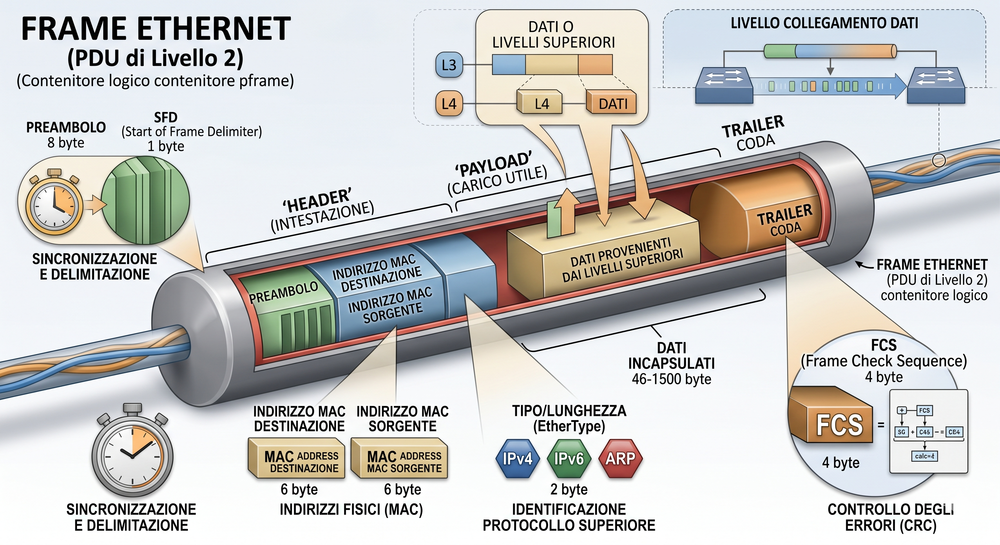
Indirizzo MAC (Media Access Control)
L'identità bruciata a fuoco sulla scheda di rete. È formato da 48 bit esadecimali: i primi 24 bit (OUI) identificano il costruttore (es. Cisco, Apple), mentre gli ultimi 24 bit sono un numero seriale unico al mondo. Questo permette allo switch di mappare fisicamente chi si trova su ciascun cavo.
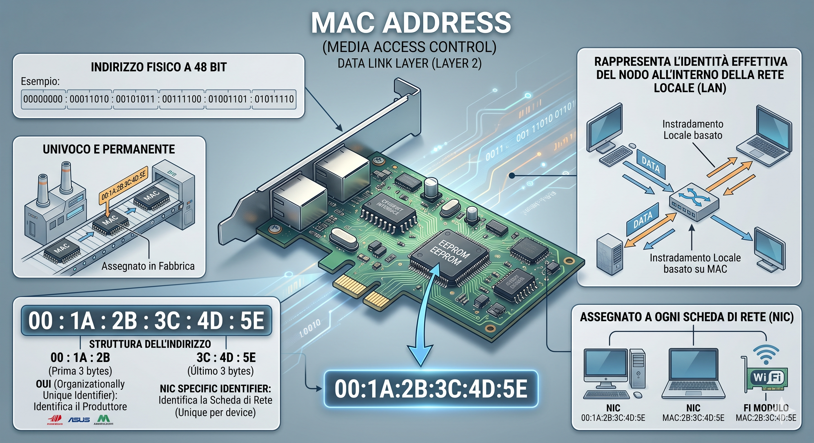
02.B // Intelligenza Hardware: L'ASIC e la MAC Table
Switching LogicA differenza degli obsoleti Hub che operavano solo a Livello 1 inondando tutte le porte indiscriminatamente, lo Switch è una macchina deduttiva. L'ispezione dei frame non è eseguita da una CPU generale (sarebbe troppo lento), ma da un ASIC (Application-Specific Integrated Circuit) stampato per eseguire solo quell'operazione alla velocità della luce.
Apprendimento: Quando un frame entra, lo switch legge il MAC Sorgente e lo registra in una velocissima memoria RAM dedicata (CAM Table), associandolo alla porta. Se il MAC Destinazione è noto, chiude un circuito fisico interno inviando i dati esclusivamente su quella specifica porta (Unicast), annientando le collisioni.
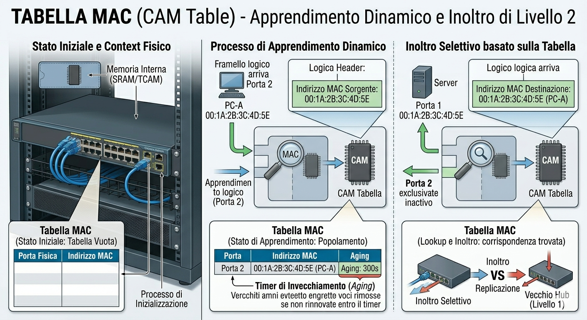
02.C // Broadcast Domains e PVLAN (Sicurezza)
Micro-segmentazioneMentre i frame Unicast sono diretti, i frame Broadcast (MAC Destinazione `FF:FF:FF:FF:FF:FF`) obbligano lo switch a replicare il pacchetto su tutte le porte. In grandi reti, questo crea una "tempesta" (Broadcast Storm) che paralizza le CPU di tutti i PC connessi e permette attacchi di intercettazione (Sniffing ARP). Per questo si confina il problema partizionando logicamente lo switch in reti virtuali: le VLAN (802.1Q).
Analisi Rigorosa: Estrema Densità Navale e PVLAN
Contesto Fisico: Una Nave da Crociera connette contemporaneamente fino a 5.000 dispositivi (ospiti) sullo stesso SSID WiFi e sulla medesima VLAN di Accesso (VLAN 10).
Rischio Logico: Se un singolo smartphone contiene un malware con capacità di movimento laterale (Worm), trovandosi sulla stessa VLAN, la rete L2 permetterà al virus di scansionare la subnet, risolvendo gli IP tramite richieste ARP e infettando direttamente gli altri 4.999 ospiti senza mai passare per il firewall L3 o il router.
Soluzione Ingegneristica - Private VLANs (PVLAN): Non potendo creare 5.000 VLAN differenti, si applica una segmentazione sub-VLAN. Le porte vengono configurate come Isolated. I dispositivi ospiti possono inviare frame solo verso l'Uplink (Porta Promiscuous collegata a Internet). Lo switch inibisce forzatamente a Livello hardware L2 qualsiasi comunicazione tra due porte Isolate. L'ARP viene soppresso: gli ospiti diventano fisicamente e logicamente invisibili tra di loro, abbattendo drasticamente la superficie d'attacco interna.
access-sw01(config)# vlan 10
access-sw01(config-vlan)# private-vlan primary
access-sw01(config-vlan)# private-vlan association 11
access-sw01(config)# vlan 11
access-sw01(config-vlan)# private-vlan isolated
!
access-sw01(config)# interface GigabitEthernet1/0/5
access-sw01(config-if)# description CABINA-GUEST-AP
access-sw01(config-if)# switchport mode private-vlan host
access-sw01(config-if)# switchport private-vlan host-association 10 1102.D // Step-by-Step: Il Flusso Dati L2
Data Walkthrough L2La Commutazione Logica Intra-VLAN
- Passo 1 (Riassemblaggio): L'ASIC della porta d'ingresso riceve la stringa binaria (101010...) dal Livello 1 e la formatta nel buffer come Frame Ethernet completo.
- Passo 2 (Verifica d'Integrità FCS): Esegue un rapido calcolo polinomiale sui bit. Se differisce dal trailer originale, il frame è stato corrotto sul cavo e viene eliminato.
- Passo 3 (Popolamento MAC Table): Legge il MAC Sorgente. Se sconosciuto, aggiorna la CAM Table legando quel MAC alla porta d'ingresso con un timer (es. 300 secondi).
- Passo 4 (Contesto Sicurezza L2): Valuta a quale VLAN appartiene la porta. Se è una PVLAN isolata, etichetta il frame per impedire l'inoltro verso altre porte isolate.
- Passo 5 (Decisione di Inoltro): Legge il MAC Destinazione. Se lo trova in tabella, commuta il frame sulla porta specifica. Se è sconosciuto o è un FF:FF:FF:FF:FF:FF (Broadcast), lo inonda (Flooding) verso tutte le altre porte valide all'interno di quella stessa VLAN.
03.A // Layer 3: Indirizzamento IP e Routing
Network LayerRuolo Fisico: Apparati intelligenti (Router Edge, Switch Multilayer Core) dotati di grande potenza CPU e memorie TCAM (Ternary Content-Addressable Memory).
Ruolo Logico: Mentre il L2 muove frame in reti ristrette, il L3 astrae l'hardware: analizza il Pacchetto IP, valuta le subnet gerarchiche e prende decisioni di routing globali basandosi su percorsi ottimali, scavalcando confini geografici.
03.B // Analisi Comparativa: VPN IPsec vs Architettura SD-WAN
Scientific ReportL'estensione geografica (Zona 4) della LAN tra sedi distanti ha subito un profondo ripensamento architetturale. L'analisi del progetto di migrazione tra le sedi di Mestre (Datacenter) e Ravenna (Filiale) evidenzia i paradigmi di questo cambiamento.
Legacy (VPN IPsec Point-to-Point)
Costrutto: Router monolitici interconnessi tramite costose linee dedicate MPLS o tunnel IPsec statici configurati manualmente in CLI. Il Control Plane (il cervello che calcola le rotte) e il Data Plane (il muscolo che muove i pacchetti) risiedono all'interno della stessa scatola fisica.
Contro: Totalmente "cieco" alle performance. Se la linea ADSL primaria sta degradando (jitter alto, ping elevato), il routing statico non se ne accorge. Finché il cavo non viene tranciato fisicamente (Link Down L1), la VPN IPsec continua a riversare traffico VoIP su una linea disastrata, causando voci metalliche e cadute. Il failover richiede l'intervento di protocolli lenti (BGP/OSPF) impiegando secondi preziosi.
Modern (SD-WAN Architecture)
Costrutto: Astrazione SDN (Software-Defined Networking). Il cervello decisionale (Control Plane, es. vSmart) risiede in Cloud, mentre l'apparato fisico in filiale (Edge Router) esegue solo il Data Plane, obbedendo alle policy scaricate dal Cloud.
Pro: Risparmio enorme sostituendo le MPLS con connessioni ibride economiche (FTTH, LTE). L'App-Aware Routing analizza ogni millisecondo le latenze dei tunnel (Underlay). In caso di degrado, il traffico critico (VoIP) viene deviato istantaneamente e silenziosamente sulla connessione 5G di backup (Failover sub-second), mantenendo trasparenti i dati bulk sulla linea degradata.
Il Cambiamento Fisico e la Topologia Ingress
La transizione ha alterato fisicamente l'accesso alla rete:
- Pre-Migrazione: Fibra ISP Esterna -> Media Converter Ottico -> Router Cisco ISR (Monolitico) -> Core Switch.
- Post-Migrazione (SD-WAN): Fibra ISP Esterna (Fibra dedicata 1G) + Fibra GPON (Backup Broadband) + Antenna LTE 5G Esterna sul tetto. Tutti convergono fisicamente nell'Appliance Edge SD-WAN (es. FortiGate/Viptela). L'Edge Appliance termina i molteplici cavi fisici, esegue l'offloading di sicurezza perimetrale (NGFW Layer 7 integrato) e cede i pacchetti "puliti" e instradati al Core Switch L3 sottostante.
! Creazione metrica di accettazione SLA per il traffico Vocale
edge-ravenna(config)# policy
edge-ravenna(config-policy)# sla-class VOICE_SLA
edge-ravenna(config-sla-class)# loss 1 ! Tolleranza massima pacchetti persi 1%
edge-ravenna(config-sla-class)# latency 150 ! Latenza massima 150ms
edge-ravenna(config-sla-class)# jitter 30 ! Varianza massima 30ms
! Se il tunnel su ADSL viola i parametri, si attiva la sequence 10
edge-ravenna(config-policy)# app-route-policy STEER_VOICE
edge-ravenna(config-app-route)# sequence 10
edge-ravenna(config-sequence)# match app rtp
edge-ravenna(config-sequence)# action accept
edge-ravenna(config-sequence-action)# sla-class VOICE_SLA preferred-color lte03.C // Step-by-Step: Il Flusso Dati L3 in SD-WAN
Data Walkthrough L3Simulazione Flusso L3: VPN IPsec (Venezia → Ravenna)
04.A // Layer 4-7: Sicurezza Perimetrale (NGFW)
Security & Deep Packet InspectionAbbandonando i livelli inferiori, la rete acquisisce intelligenza applicativa. Il traffico in ingresso/uscita deve essere ispezionato non solo per indirizzo IP o porta TCP (L4), ma per reale contenuto del payload (L7).
Next-Generation Firewall (NGFW): Appliance (spesso le stesse Edge SD-WAN) interposte a protezione della Demilitarized Zone (DMZ) e del Datacenter. Il loro processore dedicato analizza i flussi in tempo reale tramite:
- Intrusion Prevention System (IPS): Riconoscimento di firme di vulnerabilità note (es. tentativi di SQL Injection verso i web server aziendali).
- SSL Decryption: Poiché il 95% del traffico web è cifrato (HTTPS), un malware transiterebbe invisibile. L'NGFW agisce da "Man-in-the-Middle" legale: intercetta il traffico TLS in uscita, lo decifra usando un certificato aziendale installato sui PC, scansiona il file alla ricerca di ransomware e lo re-cifra prima di mandarlo in Internet.
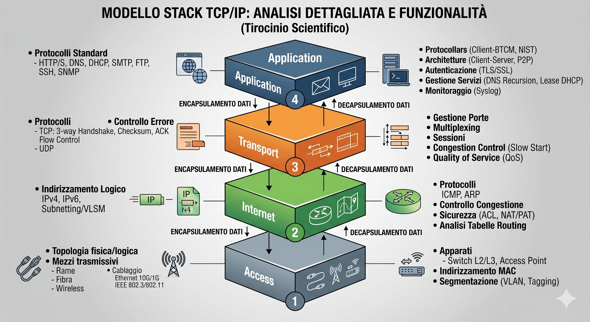
04.B // Application Delivery: Reverse Proxy (HAProxy)
Application Delivery & WAFPer massimizzare l'affidabilità dei portali web esposti verso l'esterno, l'architettura sfrutta i Load Balancer in modalità Reverse Proxy (come HAProxy). Il Proxy funge da scudo: riceve le chiamate pubbliche mascherando totalmente l'identità fisica e l'IP reale dei server web nascosti nel Datacenter.
frontend https_front
bind *:443 ssl crt /etc/ssl/enterprise.pem
mode http
default_backend web_servers
backend web_servers
mode http
balance leastconn
server web01 10.20.1.101:80 check inter 2000
server web02 10.20.1.102:80 check inter 2000 backupStep-by-Step: Il Flusso L7 (Offloading Crittografico)
- Passo 1 (Intercettazione L4): HAProxy blocca la richiesta esterna (TCP SYN) e porta a termine lui stesso il Three-Way Handshake, proteggendo il server di backend da attacchi SYN Flood.
- Passo 2 (Offload SSL L7): Decifra pesantemente il certificato SSL/TLS in ingresso. I server interni vengono liberati dallo stress computazionale dell'algoritmo RSA/AES.
- Passo 3 (Intelligenza Least Connections): Avendo il traffico HTTP in chiaro, esamina le metriche. Vede che `web01` ha 50 connessioni e `web02` ne ha 10.
- Passo 4 (Inoltro Pulito): Apre una sessione TCP separata verso `web02`, iniettando il payload originale per far elaborare la risposta dal server meno carico.
04.C // L'Ecosistema Applicativo e di Sicurezza (Livello 7)
Enterprise StackOltre alla trasmissione grezza dei dati, un'infrastruttura Enterprise si basa su uno stack vitale di software L7 (Virtual Machines o Cloud SaaS) per garantire sicurezza, identità, conformità e amministrazione remota della rete.
Zscaler (SASE / SWG)
Abbandona il concetto di perimetro locale. Invia tutto il traffico web degli utenti verso i cloud node di Zscaler tramite tunnel leggeri. Analizza in tempo reale malware, blocca domini infetti (DNS Security) e previene la fuga di dati (DLP), indipendentemente dal fatto che l'utente sia in ufficio o in smart-working.
Aruba ClearPass (NAC)
Il "buttafuori" della rete. Network Access Control. Qualsiasi PC o stampante che si collega alla presa a muro o al WiFi non riceve traffico fino a quando ClearPass non verifica l'identità del dispositivo tramite certificati digitali e protocollo RADIUS, assegnando dinamicamente la VLAN corretta allo switch.
Libraesva ESG
Email Security Gateway posizionato in DMZ. Prima che un'email arrivi al server di posta, Libraesva la intercetta. Esegue analisi euristica Antispam, disinnesca allegati PDF armati (URL Rewriting e Sandboxing), prevenendo il Phishing che rappresenta il 90% degli ingressi ransomware aziendali.
MailStore Server
Appliance software per l'archiviazione massiva e la deduplicazione delle email a norma di legge. Alleggerisce il server di posta primario e garantisce l'immutabilità della corrispondenza per scopi di auditing legale (eDiscovery).
Interfacce di Management & Remote Desktop
La gestione dell'infrastruttura avviene su una rete "Out-of-Band" isolata. Gli apparati fisici (Switch, NGFW, Hypervisor) espongono interfacce grafiche HTTPS sicure o console CLI via SSH. Per la gestione sistemistica dei server Windows Server nel Datacenter, si utilizza il protocollo RDP (Remote Desktop Protocol - TCP 3389), mentre per gli ambienti Linux nativi il protocollo SSH o VNC, garantendo che gli amministratori non debbano mai fisicamente recarsi nel freddo della Zona 1 (Datacenter).